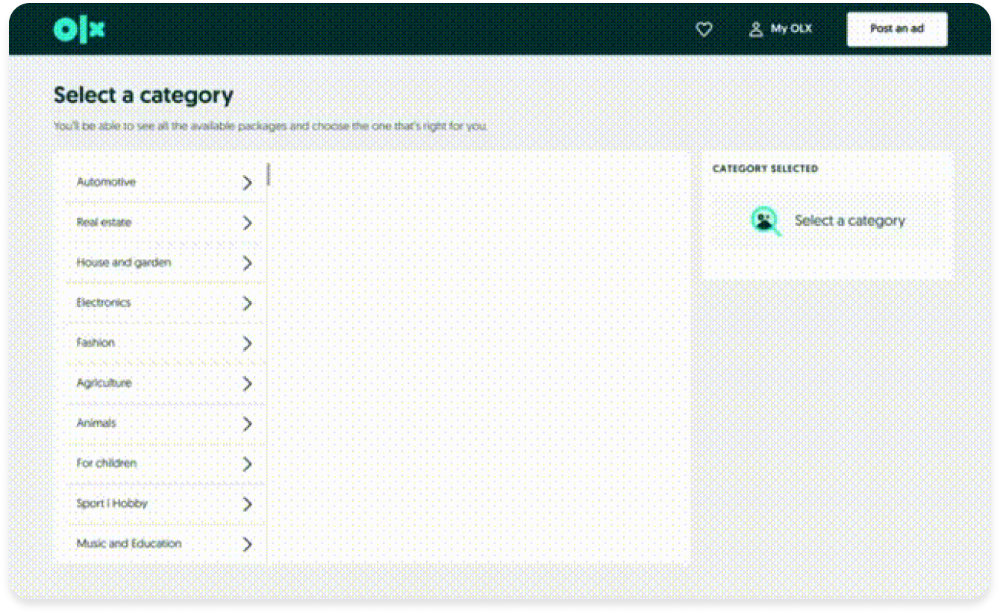
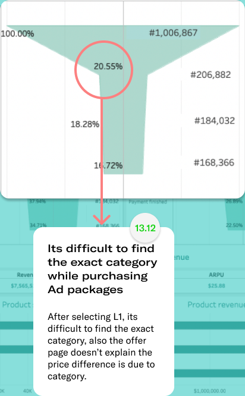
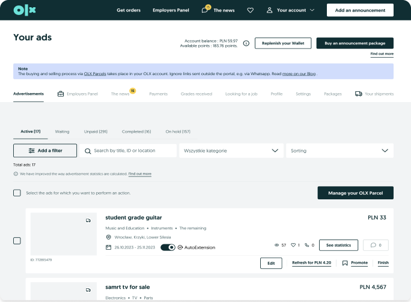
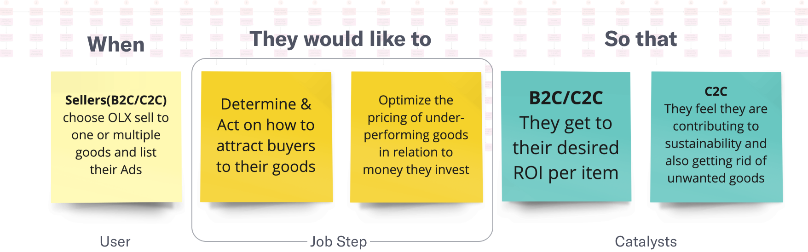
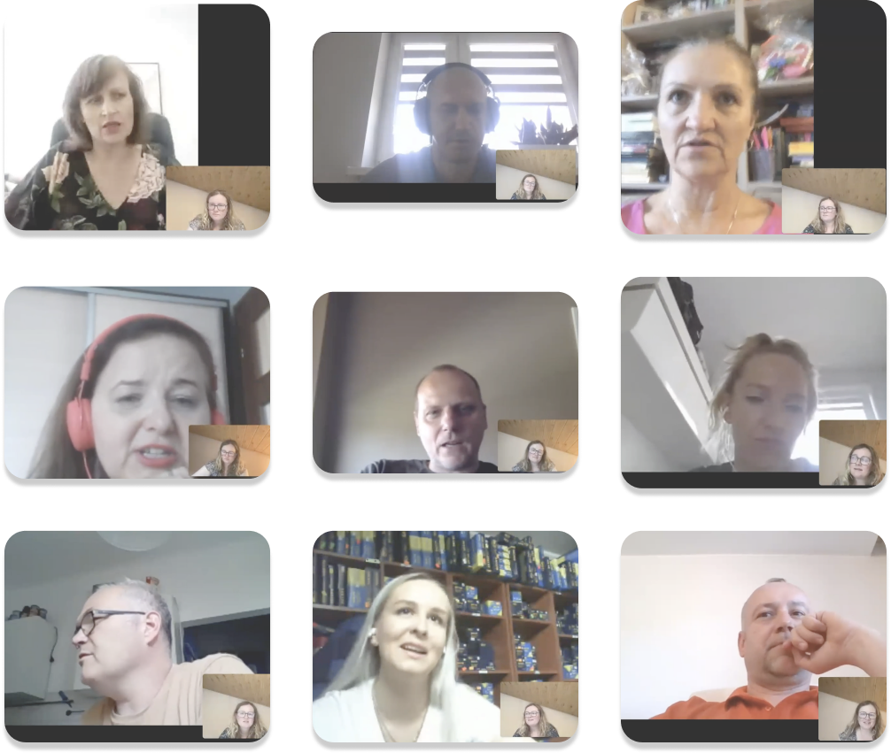
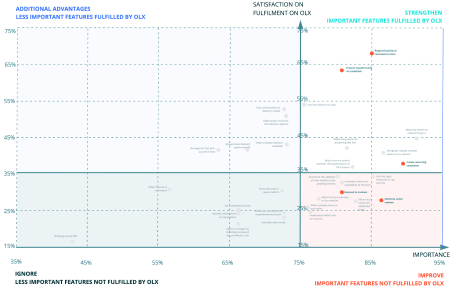
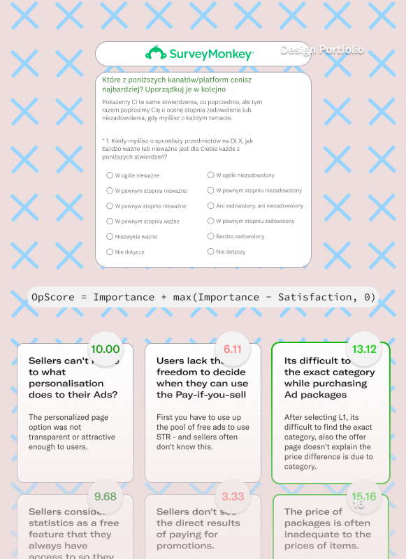
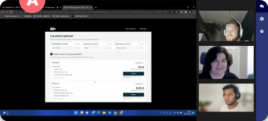
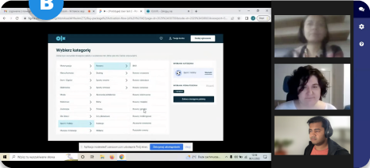
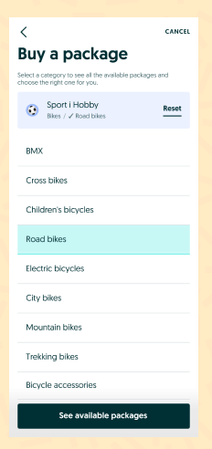

01
Buried
Category lists ran deep with no hierarchy. Users even tapped bullet points that did nothing.
🔒 Protected case study
This OLX Ad Package case study is password-protected. Enter the password to continue.
OLX Group · Case study · 2023
I found the biggest leak in OLX's monetisation funnel — one screen where 80–90% of Sellers gave up — and led the redesign that's now in an A/B test.
Role
Lead Product Designer
Timeline
16 weeks · 2023
Platforms
Desktop & Mobile web
Status
In A/B test — Poland

Overview
OLX makes money when Sellers buy Ad packages. The hardest part of that flow was never paying — it was choosing the right category. I led the redesign of that step, end to end.
My contribution
Research · Interaction · Prototype
Platforms
Desktop web · Mobile web
Status
In A/B test — Poland
Problem
Almost 80% of B2C and 90% of C2C Sellers dropped at category selection — the single largest leak in the monetisation funnel. This wasn't a polish problem; it was where revenue was bleeding.
Grow the share of monthly paying Sellers by fixing the flow, while contributing to a CSAT goal of +8.0.
The funnel's biggest cliff sat on one screen — a 20.55% fall on a single step.
Category lists ran deep with no hierarchy. Users even tapped bullet points that did nothing.
Sub-categories decided the package price, but nothing on screen revealed that link.
Search only surfaced categories already inside a package, so Sellers hit walls.

“It gets tricky to find the same category in which I post multiple ads.”
— Seller, research interview
How might we make choosing a category effortless — so Sellers actually finish buying?
Process
I ran this end to end — from framing to the A/B spec. Four moves did the heavy lifting.
12 B2C & C2C interviews, framed as a Job-to-be-Done — what Sellers were trying to achieve, not the screens they used.
Research surfaced 24 limitations. Opportunity Scoring settled the call on evidence, not opinion.
Desktop-first (60%+ of packages sell on web), I took two genuinely different concepts into testing.
Variant B satisfied 7 of 8; 5 of 8 spontaneously linked tags to price. Variant A only felt faster.
Opportunity Scoring
OpScore = Importance + max(Importance − Satisfaction, 0)Category selection topped all 24 problems at 13.12.

BeforeDrag the handle — the audited live flow on the left, the redesign on the right.








The bet
$110–160k / month
The value of each 1% more paying Sellers.
The calls that mattered
Decision 01
I bet everything on one step — not 24 fixes.
Opportunity scoring and the funnel both pointed at category selection. One defensible focus beat 24 half-fixes.
Decision 02
I designed desktop-first, against our instinct.
60%+ of packages are bought on the web. The leak was worst exactly where the money was — so we fixed that surface first, then ported it to mobile.
Decision 03
I sent two rival concepts to testing — and my favourite lost.
The real-time offer view was seductive but risked conflating categories with filters. Better to learn that in a lab than in production.
Decision 04
I chose comprehension over raw speed.
Variant A was 15% faster, but only because users gave up comparing. Variant B was slower and clearer — clarity won.
Solution


Repeat-purchase shortcut
Sparked by a tester's comment and backed by the ~31% repeat-buyer data, the flow surfaces the last purchased package so returning Sellers skip the choosing entirely.
Ported to mobile
The guided, multi-level category selection was already adopted on mobile — carrying the same transparency between category and price across surfaces.
Impact
The work is in development, so these are a diagnosis and test evidence, not a post-launch dashboard.
Variant B is now in an A/B test in Poland, the category-selection logic is already adopted on mobile, and a repeat-purchase shortcut surfaces the last purchased package.
Test the seductive idea — don't defend it.
My favourite concept died in the lab. I'm glad it didn't die in production.
Wire design to revenue earlier.
I'd instrument the funnel to attribute the fix to money from day one, rather than leaning on projections.
Don't assume the port transfers.
The desktop winner went to mobile on logic alone — I'd give the mobile flow its own validation.
Lorena (UX Writer), Małgorzata (Researcher), Claude (PM), Oana (CPO), Kuba (EM), Monica & Arsen (Jr. Product Designers), along with the Engineering and BI teams. Thanks for reading 🙌